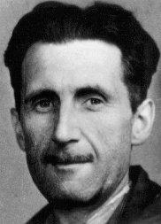
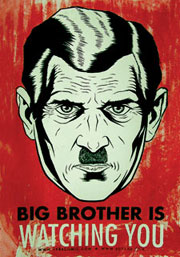

Eric Arthur Blair was an English author, born on 25 June 1903, in British India. His great-grandfather Charles Blair had been a wealthy plantation owner in Jamaica and his grandfather was a clergyman. Although the gentility was passed down the generations, the prosperity was not; Eric Blair described his family as "lower-upper-middle class". His father, Richard Walmesley Blair, worked in the Opium Department of the Indian Civil Service.
His family moved to England before World War I, where he attended to an anglican school until he was eight, and he studied at the Wellington and Elton College. His parents could not afford to send him to university without another scholarship, so it was decided that Blair should join the Indian Imperial Police. This happened in 1922. He was allowed to go home in July 1926, for a dangerous illness. While on leave in England in 1927, he reappraised his life and resigned from the Indian Imperial Police with the intention of becoming a writer.
He also joined in the Workers' Party of Marxist Unification, during the Spanish civil war in 1936. In 1940 he started to work for BBC, in 1943 and during the period between 1946 - 1947 he had a collaboration with the weekly "Tribune". He died in 1950, for tuberculosis.
He was better known by his pen name George Orwell, and his work is marked by a profound consciousness of social injustice, an intense opposition to totalitarianism, a passion for clarity in language and a belief in democratic socialism. He wrote works in many different genres including novels, essays, polemic journalism, literary reviews, and poetry. His most famous works are the satirical novel Animal Farm (1945) and the dystopian novel Nineteen Eighty-Four (written in 1948 and published in 1949).
Nineteen Eighty-Four (sometimes abbreviated to 1984) is a famous english dystopian novel, written by George Orwell. This opera is focused on a futuristic 1984, where the world is divided in 3 big intercontinental super-states. The story occurs in London, in the Oceania state. Posters of the ruling Party's leader, "Big Brother", bearing the caption "BIG BROTHER IS WATCHING YOU", dominate the city landscapes, while two-way television (the telescreen) dominates the "private" and public spaces of the populace. Oceania's people are in three classes: the Inner Party, the Outer Party, and the Proles. The Party government controls the people via the Ministry of Truth (Minitrue), the workplace of protagonist Winston Smith, an Outer Party member. As in the Nazi and Stalinist regimes, propaganda is pervasive; Smith's job is rewriting historical documents to match the contemporaneous party line, the orthodoxy of which changes daily. It therefore includes destroying evidence, amending newspaper articles, deleting any references to the existence of people identified as "unpersons".
Ministry of Truth bureaucrat Winston Smith is the protagonist; although unitary, the story is three-fold. The first describes the world of 1984 as he perceives it; the second is his illicit romance with Julia and his intellectual rebellion against the Party; the third is his capture and imprisonment, interrogation, torture, and re-education in the Ministry of Love.
One day, after helping up a woman who fell over on the street, she surreptitiously hands him a note. She is "Julia," a dark-haired mechanic who repairs the Ministry of Truth's novel-writing machines. Before that day, he had felt deep loathing for her, based on his assumptions that she was a brainwashed, fanatically devoted member of the Party; particularly annoying to him is her red sash of renouncement of and scorn for sexual intercourse. His preconceptions vanish on reading a handwritten note she gives him, which states "I love you." After that, they begin a clandestine romantic relationship, first meeting in the countryside and at a ruined belfry, then regularly in a rented room atop an antiques shop in the city's proletarian neighbourhood. The shop owner chats with Smith, discussing facts about the pre-revolutionary past, sells him period artifacts, and rents him the room to meet Julia. The lovers believe their hiding place paradisaical (the shop keeper having told them it has no telescreen) and think themselves alone and safe.
As their romance deepens, Winston's views change, and he questions Ingsoc. Unknown to him, the Thought Police have been spying on him and Julia. Later, when approached by Inner Party member O'Brien, Winston believes that he has come into contact with the Brotherhood who are opponents of the Party. O'Brien gives him a copy of "the book", The Theory and Practice of Oligarchical Collectivism, a searing criticism of Ingsoc said to be written by the dissident Emmanuel Goldstein, the leader of the Brotherhood. This book explains the perpetual war and exposes the truth behind the Party's slogan
In his journal he explains thoughtcrime: "Thoughtcrime does not entail death. Thoughtcrime IS death." The Thought Police have two-way telescreens (in the living quarters of every Party member and in every public area), hidden microphones, and anonymous informers to spy potential thought-criminals who might endanger The Party. Children are indoctrinated to informing; to spy and report suspected thought-criminals, especially their parents.
The Thought Police later capture Winston and Julia in their sanctuary bedroom and they are separately interrogated at the Ministry of Love, where the regime's opponents are tortured and killed, but sometimes released (to be executed at a later date). Charrington, the shop keeper who rented them the room, reveals himself to be an officer of the Thought Police. After a prolonged regimen of systematic beatings by prison guards and psychologically draining interrogations by Party loyalists, Winston is subjected to electroshock torture by O'Brien, who tells Winston it will "cure" him of his "insanity", which O'Brien claims undeniably manifests itself in the form of Winston's hatred for the Party. During a long and complex dialogue, O'Brien reveals, in what is the most important line in the book, that the motivation of the Inner Party is not to achieve a future paradise but to retain power, which has become an end in itself. He outlines a terrifying vision of how they will change society and people in order to achieve this, including the abolition of the family, the orgasm, and the sex instinct, with the ultimate goal of eliminating anything that may come between one's love of Big Brother and Ingsoc. At the end, the Party wins, and Smith is reconcilied with the society.
In this novel, the control of the people happens with the so-called "telescreens": they are a device similar to a television, with a camera and a microphone: with this instrument, the thought Police can spy everybody everywhere and when ever he want. This attack to personal privacy is a situation that we can found in modern times, as we have many telecameras in our city, and many kind of our way to communicate with others can be controlled. The main risk is that the description provided by Orwell can became reality in few years. Many times, in our everyday life, we don't give importance to this aspect, and we can lost our freedom and privacy. Internet can be considered a tool, which can improve democracy and can makes the freedom of speech a reality also where, in real life, this is not possible, but this situation could also change, with the introduction in our computer and personal devices of a small chips, that have been putted into a part of our pc and phones for "security issues", but it's able to control our informations completely. Infacts, this chips can decides which software we can use or not, has a complete control over our datas and can do whatever he wants to (for example, to send a part of them over the web or erase them: this is already happened).
If we want to keep our freedom, we have to fight for it. Fortunatly we don't risk to became prisoners in the 101 camera of the Ministy of Love, but we can maintain it, hoping that 1984 will remain only a warning for the next generations.
If you want some informations about this attack to our privacy, visit no1984.org (an italian website) or wikipedia, at the page Trusted Computing